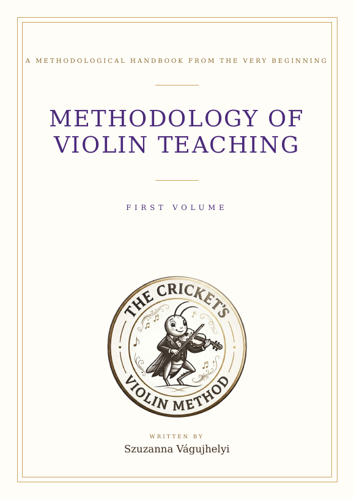
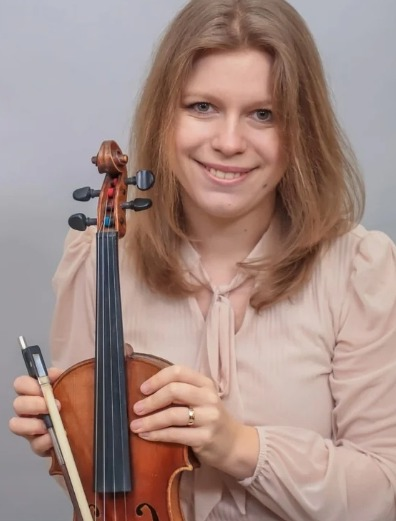
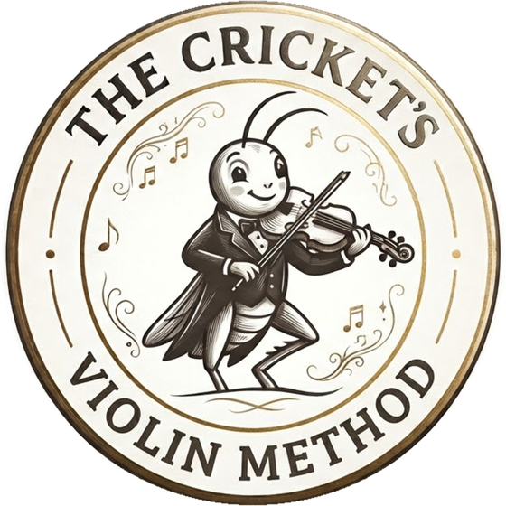
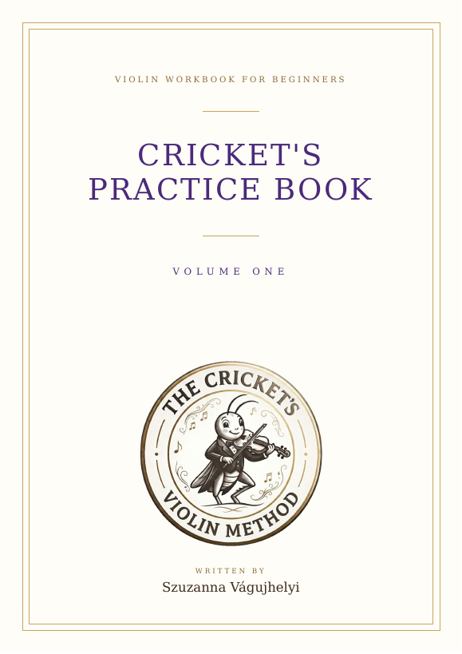
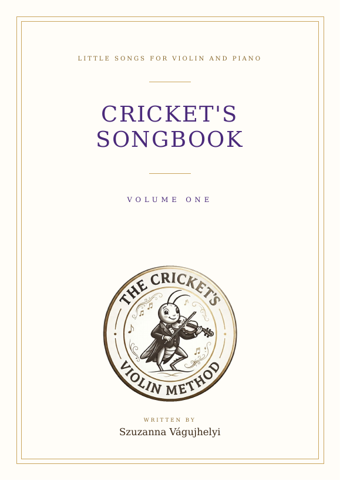

Methodology of Violin Teaching
A handbook for teachers: posture, bow hold, left hand and tone production, step by step from the very first lesson.
€35
Digital edition · PDF
Order
Free sample pages
Professional violinist and violin teacher with more than fourteen years of teaching experience, and author of The Cricket's Violin Method.
Discover the method Watch on YouTube
“Making music should feel free, natural and untroubled by tension – for everyone.”Szuzanna Vágujhelyi
As a professional violinist with more than fourteen years of teaching behind me, I have always been guided by musical integrity, depth of work, and the belief that making music should feel free, natural and untroubled by tension, for everyone.
In 2026, I gathered the essence of that experience into a first volume, conceived to lay sound, healthy foundations for violin technique from the very first steps. Every lesson, principle and exercise in it has proven itself in daily teaching and has become, for me, a trusted companion.
Method books that convey truly living knowledge are rare, and I am glad to offer this one in that spirit. Knowledge endures only when it is passed on; otherwise it remains no more than a thought. I have drawn on the wisdom of several pedagogical traditions and enriched them with a great many ideas of my own.

Volume One · 2026
From this synthesis was born The Cricket's Violin Method (in Hungarian: Tücsök-módszer): a considerate, child-centred approach that unfolds in the first book.
Two companion publications accompany the method book. Cricket's Practice Book translates the same tasks into a child's own language, making practice at home easier and more joyful. Cricket's Songbook gathers only the pieces found in the first volume, so that everything is close at hand.
This is only the first stage. Many more ideas, lessons and exercises await in the second volume.

A handbook for teachers: posture, bow hold, left hand and tone production, step by step from the very first lesson.

The same tasks in a child's own language: playful pages that make practising at home easier and more joyful.

All the pieces from Volume One in one collection, for violin and with piano accompaniment.
If my method interests you, or you would like to order any of the editions, get in touch in whichever way is easiest for you.